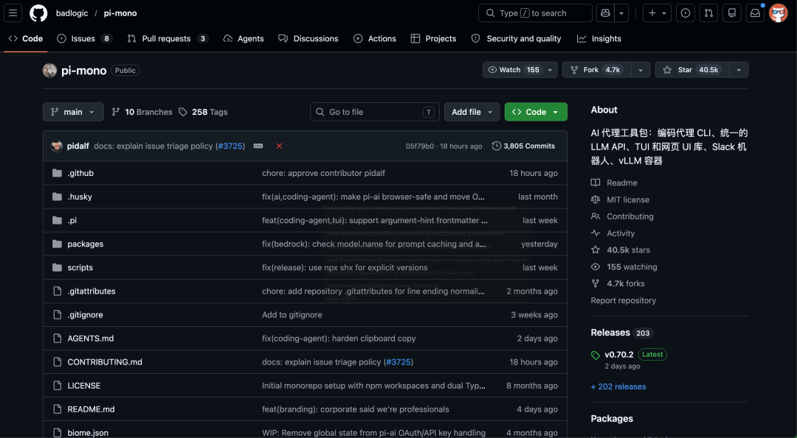
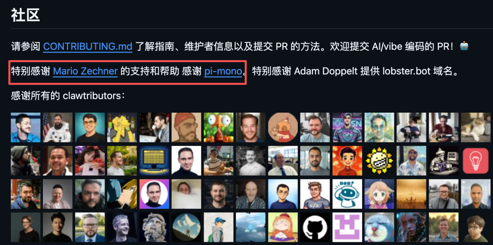
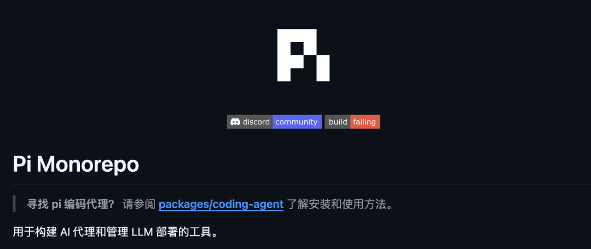
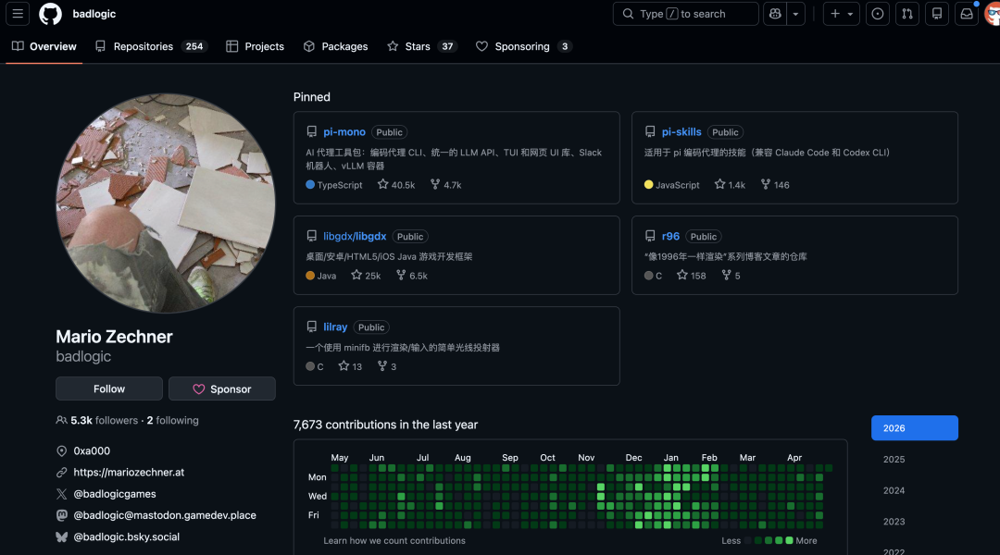
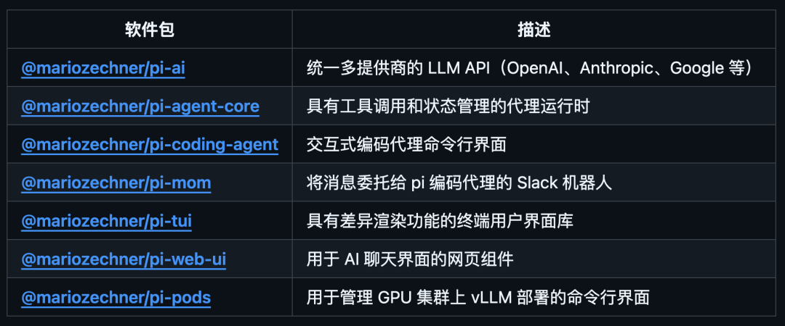
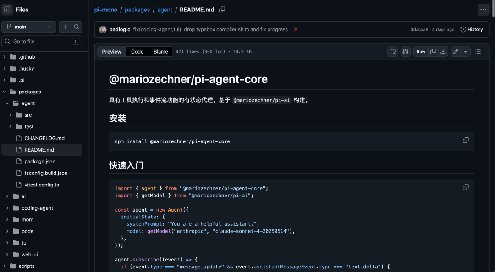
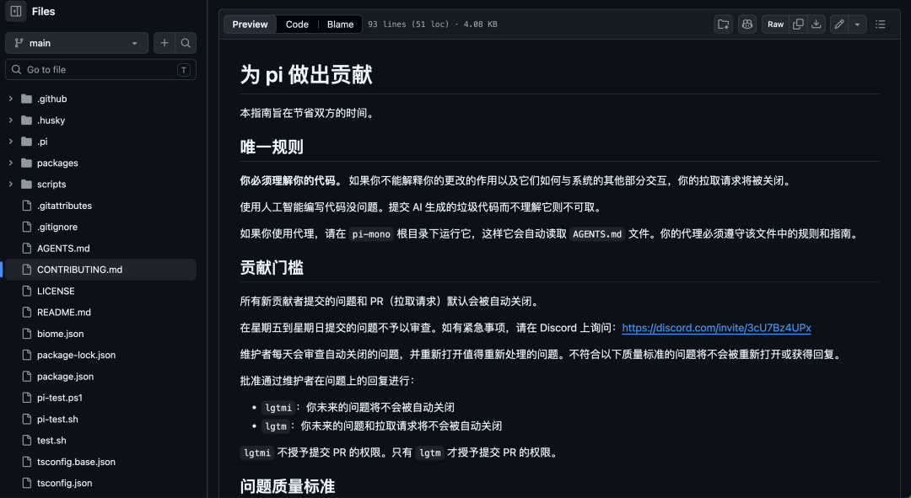
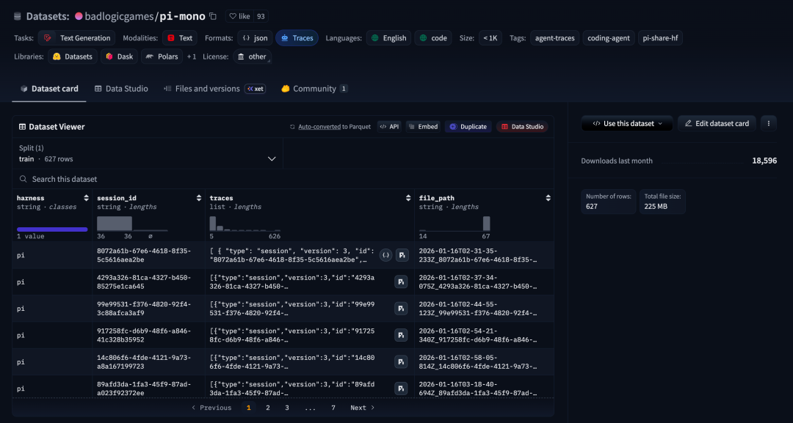

不需要从零开始踩坑，不需要从头造轮子。
今天推荐的开源项目已经把 Agent 底层架构打磨得非常干净了。如果你想开发属于自己的 Agent，这个项目值得研究透彻。

它就是 pi-mono。
OpenClaw 的核心运行时，就是基于 Pi 的 SDK 构建的。
OpenClaw 的 README 里直接写了：特别感谢 Mario Zechner 的支持以及 pi-mono。

Pi-mono 也借 OpenClaw 的成功一路冲到了 4 万 GitHub Star。
对于一个底层工具链项目来说已经很猛了。
那 OpenClaw 为什么选 Pi 做底层？
因为 Pi 做到了一件极难的事：极致极简，却又不失强大。今天就来拆解一下，它到底做对了什么。
01
项目简介
pi-mono 是一个 TypeScript 单仓项目，专门用来构建 AI Agent 和管理 LLM 部署。
核心产品叫 Pi，是一个跑在终端里的编程 Agent，你可以在项目目录里直接用它读文件、写文件、编辑代码、执行命令。

它的作者是 Mario Zechner，网名 badlogic，libGDX 游戏框架的作者。他在 AI Engineer London 上做过一个演讲。
标题就叫：我讨厌每一个 Coding Agent，所以我自己写了一个。
挺霸气的。

开源地址：github.com/badlogic/pi-mono02
Pi 的极简哲学
Pi 和其他 Coding Agent 最大的区别，在于它的设计哲学。
大多数 Agent 工具恨不得把所有功能都塞进去：MCP 支持、子 Agent、Plan 模式、权限弹窗、内置 Todo。
功能列表越来越长，但你用的可能不到三分之一。
Pi 反着来。
它的核心只有四个工具：read、write、edit、bash。系统提示词不到 1000 个 token，是所有主流 Agent 里最短的。
它刻意没有内置这些：
没有 MCP
没有子 Agent
没有权限弹窗
没有 Plan 模式
没有内置 Todo
没有后台 Bash
这些功能不是做不了，而是让你通过 Extensions、Skills、Packages 按需扩展。
Pi 的理念是：让工具适应你的工作流，而不是让你适应工具。
说白了，Pi 给你一个干净的内核，剩下的你自己搭。不想搭也行，装别人做好的包就行。
这也是为什么 OpenClaw 选了它，底层足够干净，上面才能搭出足够复杂的东西。
03
架构拆解，七个包各司其职

pi-mono 把 Agent 开发需要的每一层都拆成了独立的 npm 包，你需要哪层用哪层：
pi-ai：统一的多提供商 LLM API。
一个接口对接 20 多个 LLM 提供商，包括 OpenAI、Anthropic、Google、Azure、Kimi、MiniMax、Hugging Face 等等。
你不需要关心每个提供商的 API 差异，pi-ai 帮你抹平了。
这个包完全可以单独拿出来用。
pi-agent-core：Agent 运行时。
负责工具调用循环、状态管理、上下文维护这些核心逻辑。只依赖 pi-ai，非常轻量。

pi-coding-agent：终端编程 Agent 主产品。
就是那个 pi 命令行工具，包含完整的会话管理、扩展系统、UI 渲染。
它也暴露了 SDK，OpenClaw 就是通过这个 SDK 把 Pi 嵌入到自己的网关里的。
pi-tui：终端 UI 库，差分渲染引擎。你在终端里看到的那些漂亮的界面就是它画的。
pi-web-ui：Web 端的聊天组件。如果你想在浏览器里做一个 AI 对话界面，直接用就行。
pi-mom：Slack 机器人。把 Pi 接到 Slack 里，频道消息自动委托给 Pi Agent 处理。
pi-pods：管理 vLLM 在 GPU Pod 上的部署。如果你要跑自己的模型，这个包帮你在远程 GPU 上管理推理服务。
重点来了，这七个包每一个都可以独立使用。
你不需要用整个 Pi，只用 pi-ai 来统一 LLM 调用也行，只用 pi-agent-core 来搭自己的 Agent 运行时也行。这就是模块化设计的威力。
04
有几个特性
① 20+ LLM 提供商统一接入
一个 API 对接 20 多个提供商，支持两种认证方式：API Key 和 OAuth 订阅登录。
你可以直接用 Anthropic Claude Pro/Max、OpenAI ChatGPT Plus、GitHub Copilot 的订阅来跑 Pi，不用单独买 API 额度。
切换模型也很方便，Ctrl+L 直接呼出模型选择器，Ctrl+P 在多个模型之间快速轮换。
② Sessions 树状分支
Pi 的会话是用 JSONL 文件存的，每个条目有 id 和 parentId，形成树状结构。
你可以在对话中的任意历史节点分叉出去探索新方向，所有历史都保留在一个文件里。
输入 /tree 可以看到完整的对话树，折叠、展开、搜索、跳转都支持。像 Git 一样管理对话历史，这个设计真的挺巧妙的。
③ Extensions 扩展机制
用 TypeScript 写扩展，可以自定义工具、命令、快捷键、UI 组件，甚至可以替换内置工具。
你还可以通过扩展添加自定义的 LLM Provider。
社区里有人做了一个 Doom 扩展，在等待 Agent 回复的时候可以在终端里打 Doom，非常离谱但确实能跑。
④ Skills 技能系统
遵循 Agent Skills 标准，一个 Markdown 文件就是一个技能。零代码就能扩展 Agent 的能力。
⑤ Pi Packages 生态
把你的扩展、技能、提示词模板、主题打包成 npm 包，一行命令安装：
pi install npm:@foo/pi-toolspi install git:github.com/user/repo
还有 pi.dev/packages 画廊页面展示社区包。
⑥ 四种运行模式
除了默认的交互式终端模式，Pi 还支持 Print/JSON 模式，非交互输出、RPC 模式，通过 stdin/stdout 做 JSON-RPC 通信，方便其他进程集成、以及 SDK 模式，
SDK 模式就是作为库嵌入到你自己的应用里，OpenClaw 就是这么用的。
⑦ 上下文压缩
长会话会把上下文窗口撑爆。
Pi 支持自动和手动两种压缩方式，把旧消息总结精简，最近的对话保持原样。
完整历史还在文件里，随时可以通过 /tree 回溯。
05
5 分钟上手
安装就一行命令：
npm install -g @mariozechner/pi-coding-agent然后设置 API Key：
export ANTHROPIC_API_KEY=sk-ant-...pi或者直接用订阅登录：
pi# 输入 /login，选择提供商，浏览器里完成授权启动后就是一个交互式终端界面。直接打字对话就行，输入 @ 可以模糊搜索项目文件引用，输入 ! 加命令可以直接跑 bash 并把结果发给 LLM。
几个常用快捷键：
Ctrl+L：切换模型 Ctrl+P：在多个模型间轮换 Shift+Tab：切换思考等级 Escape 按两次：打开对话树
想装社区包的话：
pi install npm:包名想写自己的扩展，在 ~/.pi/agent/extensions/ 目录下创建一个 .ts 文件就行。
06
快去试试
和 Claude Code 比，Pi 更极简更可定制。它是终端原生工具，不是 IDE 插件。
更轻量，也更透明，Pi 不会背着你偷偷往系统提示词里塞东西。
如果你是一个 Agent 开发者，想基于成熟的底层搭自己的产品，那 Pi 的 SDK 和 pi-ai 包就是为你准备的。
OpenClaw 已经证明这条路走得通。
如果你就是追求透明、不想用黑箱工具，Pi 的系统提示词不到 1000 token，所有行为你都能看到。
4 万 Star 不是白来的。
Pi 的社区有几个挺有意思的地方：
贡献机制很独特，新贡献者的 Issue 和 PR 默认自动关闭，维护者每天审核后重新打开有价值的。
通过 lgtmi 和 lgtm 两个等级晋升，拿到 lgtm 才能提交 PR。
唯一的规则就一条：你必须理解你的代码。用 AI 写代码可以，但不理解就提交不行。

还有 OSS Session 分享计划。
Mario 鼓励用户把真实的编程会话数据发布到 Hugging Face，包含完整的工具调用、失败和修复过程。
他认为这种真实数据比玩具基准测试有价值得多。
他自己也在 Hugging Face 上公开了 627 条以上的 pi-mono 工作会话。

Pi-mono 把核心做到极致精简，然后通过扩展机制让生态自然生长。
OpenClaw 的成功就是最好的证明。
最简洁的底层，支撑起了最复杂的应用。
如果你 2026 年想造自己的 Agent，不要从零开始。
先把 pi-mono 吃透，看看别人是怎么把 Agent 的每一层抽象做干净的，然后再决定自己要在哪一层创新。
站在巨人的肩膀上，比从地上爬起来快多了。
07
点击下方卡片，关注逛逛 GitHub
这个公众号历史发布过很多有趣的开源项目，如果你懒得翻文章一个个找，你直接关注微信公众号：逛逛 GitHub ，后台对话聊天就行了：